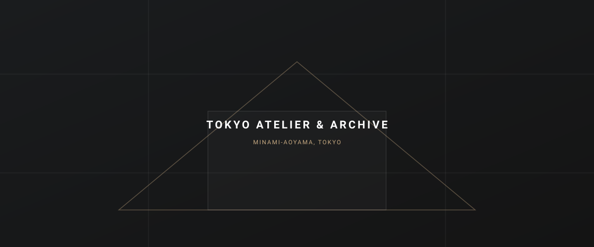

01 // PHILOSOPHY
Architecture of Resonance
奇をてらう造形ではなく、光・風・素材の対話から生まれる静謐な建築。
-
01
Light & Void
光と余白の幾何学空間を満たすのではなく、いかに削ぎ落とし、純粋な自然光の移ろいを受け止める「器」をつくるか。刻々と変化する陰影が、日々の営みに深い静寂をもたらします。
-
02
Material Integrity
素材本来の質感と経年美石、木、コンクリート、鉄。フェイクの化粧材を排し、素地のままの素材を厳選。年月を重ねるほどに風合いを増し、土地の記憶とともに育つ建築を目指します。
-
03
Contextual Dialogue
風土と環境との対話敷地が持つ固有の高低差、卓越風、日照、隣接する植生を徹底的に分析。周辺環境から孤立するのではなく、景観の一部として溶け込む配置計画を徹底します。

02 // ATELIER & INQUIRY
Dialogue in the Studio
南青山のアトリエでは、過去の模型・素材サンプル・図面アーカイブをご覧いただきながら、建築のご相談を随時承っております。